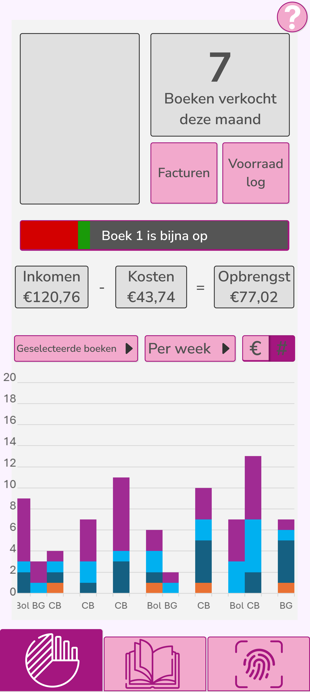
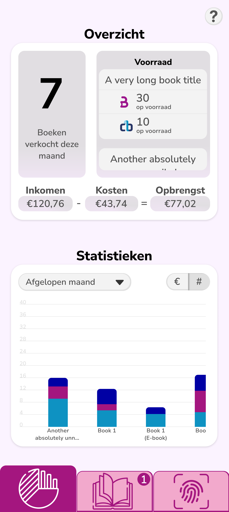
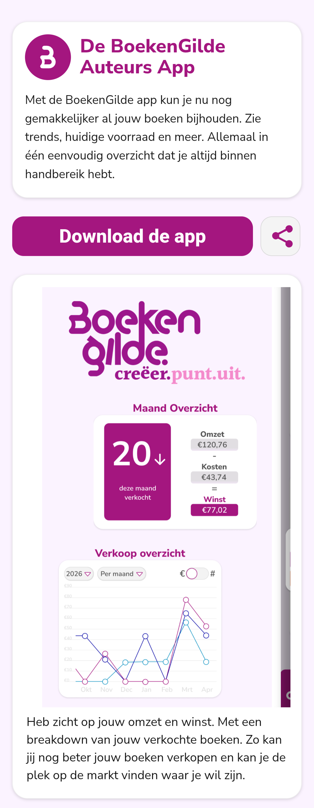

The Project & The Plan
The final project at Creative Media & Game Technologies was my graduation.
I had the opportunity to do this at BoekenGilde, a company in Enschede who aid self publishers with promotion, distribution and printing.
Their website was currently set up to have users log in and manage their books via desktop; the idea was to now create a mobile app that could make quick overviews and actions easier to manage.
This led to my internship project being to create this. Although I would have many helping hands, I would be responsible for the design, the prototypes, the testing and the creation of the app.
As such I conducted an examination into what was possible, what was needed and what should be excluded in the app.
Through talks with business partners the conclusion was made to create a Progressive Web App (PWA), a way to have a website act as a native app on mobile devices. As such, the code would be created in website code, and the prototypes would be made with Figma.
First Iterations

Throughout the project many changes were made. Each prototype would reveal finer details to be changed to ultimately create an app that the broad target audience could be satisfied with.
Three main designs stood out as steps in the journey. The first was tested and it quickly became clear that the style was to nobodies liking.
The amount of grey and the proximity of the elements in the pages meant testers felt overwhelmed and lost. This led to many changes in colour, positioning, font, and much more.
These changes were made based on UI/UX principles and by brainstorming with one of the designers in the team.

Turning Point
From the following test, the results showed a clear improvement across all measures, particularly in style and colour.
Still users had trouble with understanding certain elements, in particular the graph.
This marked a turning point in the project. As another test would be required to improve the design, but this would mean less work could be completed for the final app.
I proposed the benefits of another test to the team, and we ultimately decided to test one more time and not rush the design process.
This test concluded with some final small changes but also marked the end of the design process. Having tested with 16 different users, the final design would lay the groundwork for future work on the app.

Progressive Web App

From here on I worked on the PWA groundwork so that future work could start in a simpler way.
With this I also created the download page that users would find the app in.
This featured a carousel with images to explain parts of the app. Working download and share buttons and some simple text.
As the design team did not have experience with code, I created it so that all text and images could be changed out from a central area with instructions on how to do so.